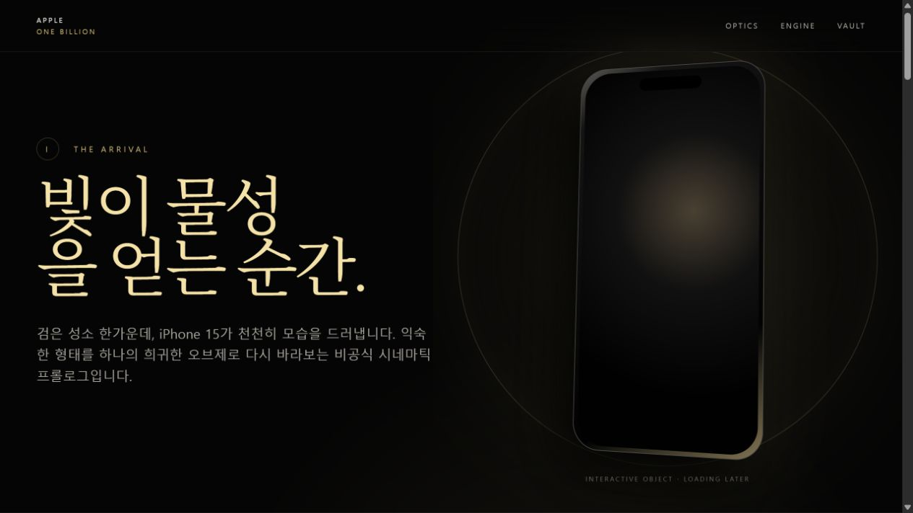
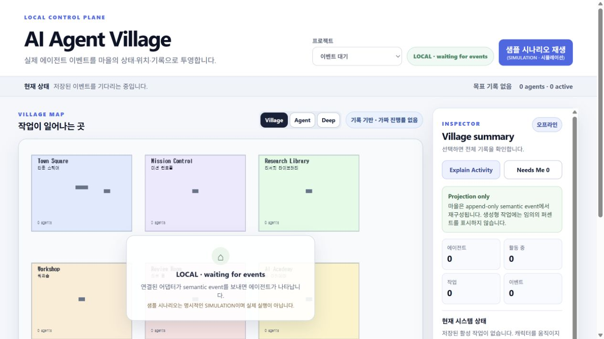
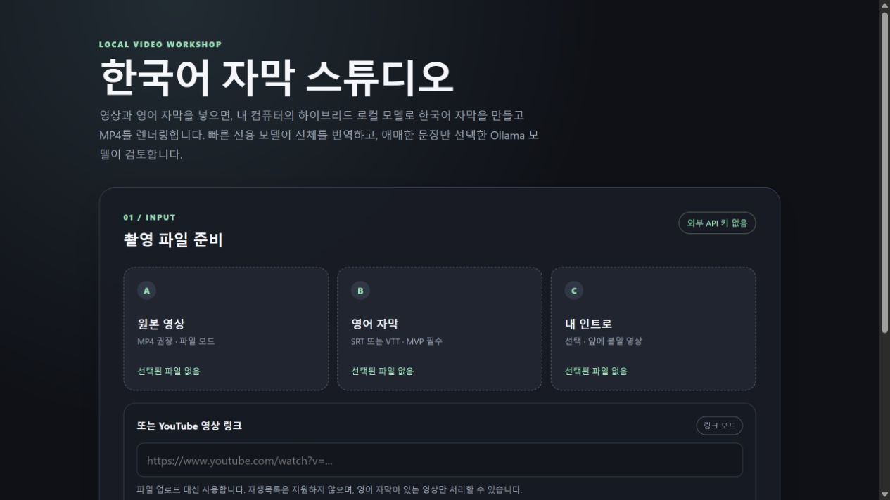
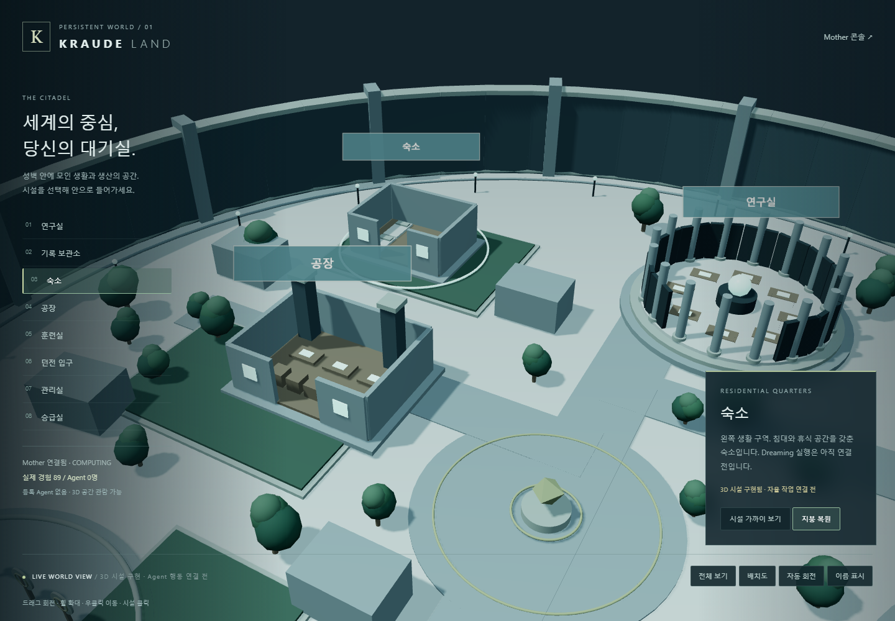
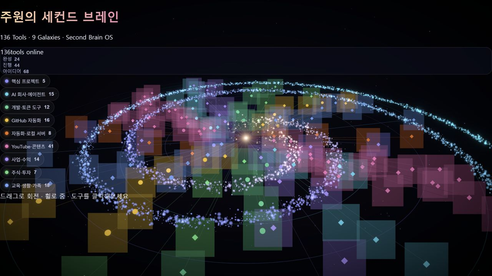
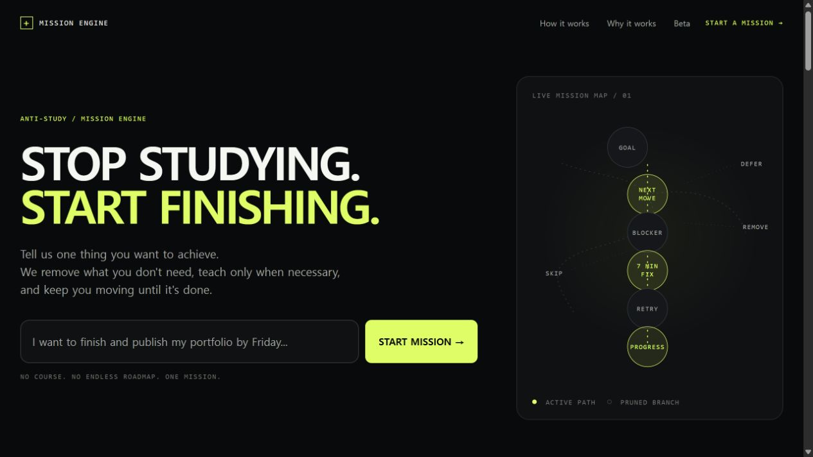

THE WORK / 01
iPhone Cinematic 3D
시네마틱 3D 기기 웹 데모를 만드는 초기 작업.

01 / THE CONSTELLATION
도구를 만들고. 화면을 만들고. 세계를 만들고.
서로 다른 실험들이 한 사람의 이야기로 이어진다.
실제 프로젝트 캡처를 활용한 공간 연출. 연결선은 상징이며 시스템 통합 완료를 뜻하지 않습니다.
THE WORK / 01
시네마틱 3D 기기 웹 데모를 만드는 초기 작업.

THE WORK / 02
AI 직원과 협업 상태를 보여주는 3D·픽셀 회사 세계.

THE WORK / 03
영상 입력·유튜브 다운로드·한국어 자막·최종 출력·QA를 다루는 웹앱.

02 / THE CONVERGENCE
흩어져 있던 모든 시도들이,
이제, 가장 깊이 들어간 작업들.
THE CORE / 01
3D 시설·미션 관제·에이전트 상태와 모델 실험을 연결한 로컬 세계.

THE CORE / 02
프로젝트 관계를 뉴런처럼 연결하는 개인 지식 시각화.

THE CORE / 03
목표·미션·시도·판정, 온보딩과 AI 연결을 갖춘 실행 관리 웹앱.

03 — THE PERSON BEHIND THE PROJECTS
AI가 무엇을 할 수 있는지 궁금해서 도구를 만들고, 더 나은 작업 방식을 찾고 싶어서 시스템을 연결합니다. 그 과정은 코드가 되기도, 영상이 되기도, 하나의 세계가 되기도 합니다.
이곳은 완성된 성과만 모은 이력서가 아닙니다. 공개할 수 있는 프로젝트 설명과 기록을 모은 포트폴리오입니다. 모든 작업을 혼자 처음부터 만든 것처럼 소개하지 않습니다. 외부 오픈소스 활용과 가족 협업은 따로 표시합니다.